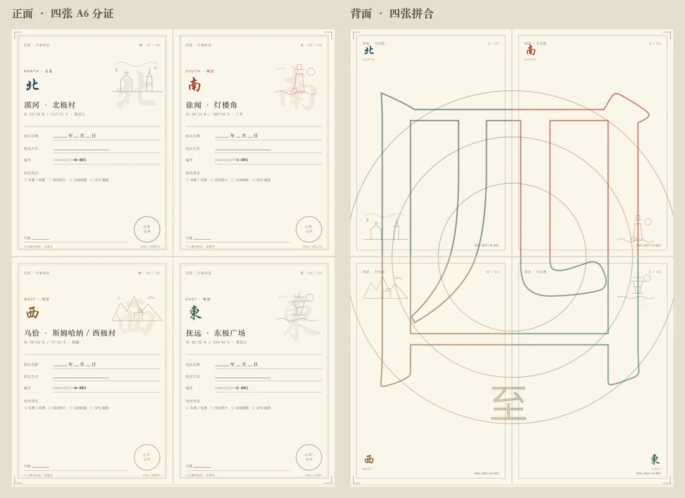
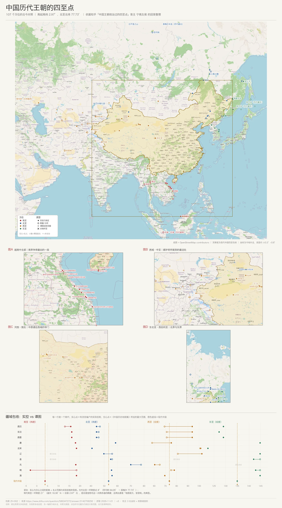
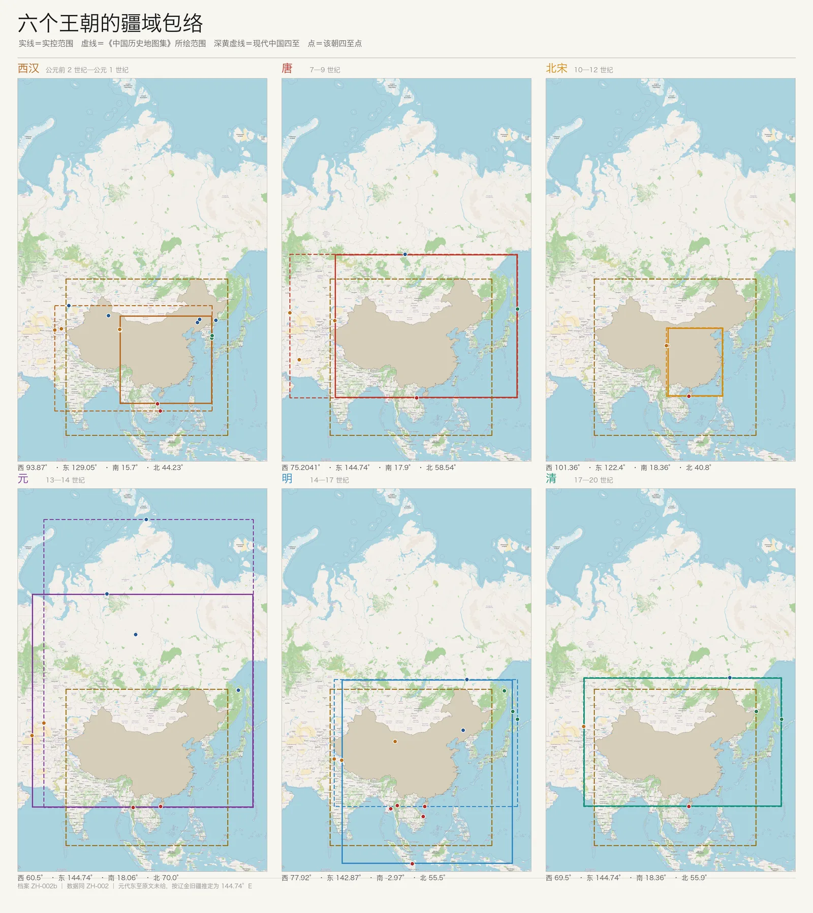
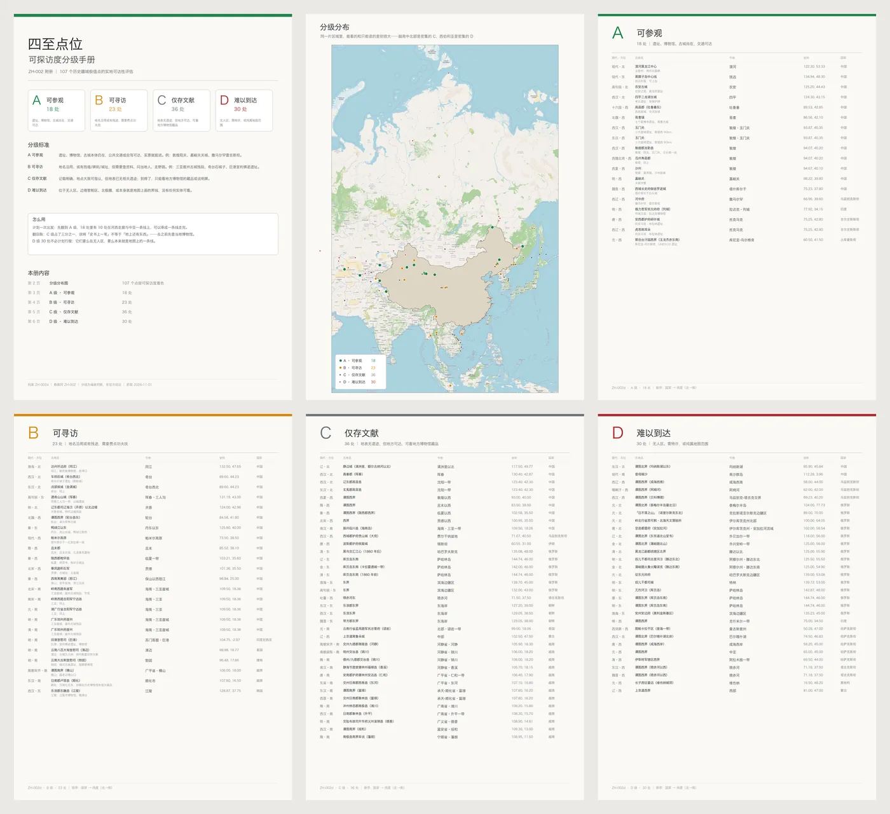
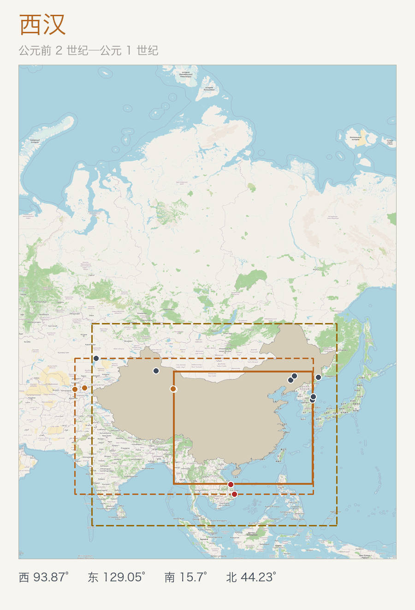

这套档案把“四至”拆成南、北、西、东四个方向，再把每个点放回朝代、今地、类型和可探访度里。它来自一个人的整理，不是现代边界测量。
南、北界原文多只给纬度，东、西界多只给经度；另一轴按今地补全，误差约 ±0.3°~0.8°。三条坐标据 ZH-003 改为秒级实测。
读法：四至卡片按经纬度直接取极值，所以会混用实控、羁縻、谭图、军事等口径。看类型标签，不要把“谭图画到哪”当成“官派到哪”。
MODERN · SIX FRAMES
现代中国四至
同一块国土，按“主张、实控、含海南、大陆本土、游客、声索现状”会得到不同的四至。先选口径，再看点。
底图 © OpenStreetMap contributors（ODbL）· 边界与争议点仅作地理示意，不代表本站对主权的判断。
普通游客怎么到
只列通常能到的四个“游客四极”，不是严格极值点。
读法：“法理”只指中华人民共和国政府主张口径，不是国际司法裁决；“实际控制”按公开资料描述现状；“台湾、钓鱼岛、南沙”只作声索/现状点，不计入四至极值，也不提供登岛或争议海域旅行指引。历史 107 点见下方，二者不要混算。
现代四至资料：Wikipedia「中华人民共和国地理极点」 · 底图 © OpenStreetMap contributors（ODbL）。
现代四至资料：Wikipedia「中华人民共和国地理极点」 · 底图 © OpenStreetMap contributors（ODbL）。
DOWNLOAD · PRINTABLE
四至 · 行者自证
给普通旅行者的一套四极打印模板：四张 A6 分证、四张背面、一张 A5 总状、一张封套展开模板。
- 四张分证：北、南、西、東，行楷大字
- 四张背面：拼成一个巨大的「四」字和方位圆
- A5 总状：四个点的日期、方式、编号汇总
- 封套模板：沿实线裁、虚线折，刚好装下分证和总状
这是个人旅行纪念模板，不是官方证书，也不构成任何边界主张。公开版只提供空白模板；姓名、日期、交通方式建议打印后手写。

历史部分ZH-002 · 107 个历史疆域极值点
四个极值点
按数据中的经纬度取极值，展示的朝代、地点和类型都来自原始记录；同值点多时在卡片下方标出数量。
四至导览图
主图把 107 个点放回地图，并单列越南中北部、西域中亚、河西陇右、东北亚四个密集区。



展开疆域演变 GIF（六帧循环）

底图 © OpenStreetMap contributors（ODbL）
107 个点
点古地名打开详情。筛选只改变显示范围，不改变原始编号和顺序。
| 序号 | 方位 | 朝代 | 古地名 | 今地 | 类型 | 可探访 | 坐标 |
|---|
可探访度与档案下载
A 可参观 / B 可寻访 / C 仅存文献 / D 难以到达。这里只给分级和提示，不把“地图上有点”说成“现场有遗址”。